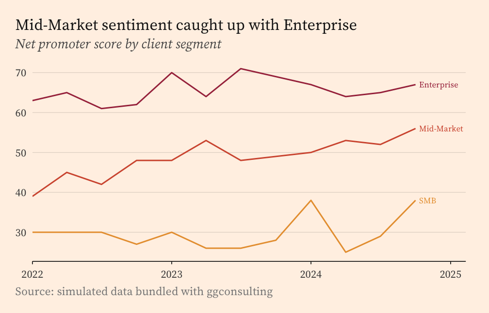
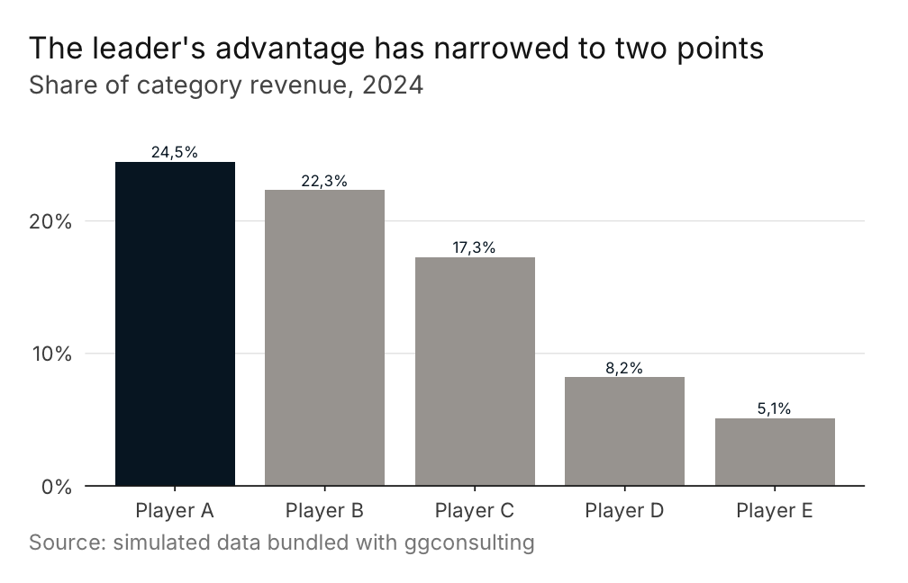

ggconsulting turns a plain ggplot into slide-ready output. It ships archetype themes drawn from published business charts, palettes to match, formatters that speak pt-BR and en-US, and a polish layer that reads your data to place labels and highlights.
ggconsulting is in early development. The public API is being shaped against real consulting decks, so expect breaking changes through 0.x.
The themes require ggplot2 4.0 or later. They lean on theme_sub_*(), element_geom(), and from_theme(), none of which exist in ggplot2 3.x.
Installation
Install the development version from GitHub.
# install.packages("pak")
pak::pak("viniciusoike/ggconsulting")Quick start
library(ggplot2)
library(ggconsulting)
#> ✔ ggconsulting set ggplot2 aesthetic defaults
#> ℹ Opt out: `ct_unset_defaults()` or `options(ggconsulting.autoload = FALSE)`
#> ℹ Column width / linewidth: use `ct_col()` / `ct_line()`, or apply a
#> `theme_*()` archetype for linewidth via `from_theme()`
players <- subset(market_share, company != "Others")
ggplot(players, aes(year, share, colour = company)) +
ct_line() +
scale_colour_ct("strategy_navy") +
scale_y_continuous(labels = fmt_pct(decimals = 0)) +
scale_x_continuous(
breaks = seq(2015, 2024, 3),
expand = expansion(mult = c(0.02, 0.12))
) +
labs(
title = "Player C gained nine points of share as the leader lost nine",
subtitle = "Share of category revenue",
x = NULL, y = NULL,
caption = "Source: simulated data bundled with ggconsulting"
) +
theme_strategy() +
theme(legend.position = "none") +
ct_finish(end_labels = TRUE, end_points = TRUE)
ct_finish() runs after the geoms are built, so it can inspect the data. Here it finds the last point of each series and drops a dot and a name beside it. Labelling the lines directly replaces the legend, which is why the example switches the legend off.
ct_finish() would normally widen the x range to make room for those labels, but it defers to any positional scale you set yourself rather than replacing it. This example supplies its own scale_x_continuous() to get integer year breaks, so it also supplies the right-hand expand the labels need.
Themes
ct_theme() builds a theme from palette, font, density, context, and paper. Three presets cover the archetypes.
-
theme_strategy()keeps a minimal frame, generous whitespace, and a navy default. -
theme_finance()tightens spacing for printed pages and pitch books, drops the gridlines, and puts ticks on the y axis in their place. -
theme_editorial()sets a serif face with an italic subtitle and a warmer palette.
paper sets the figure ground. Pass "cream", "warm_grey", "white", or any colour R recognises. Because theme_minimal() leaves the panel blank, filling the plot background alone produces a uniform ground with no seam between panel and plot. Setting paper warms the gridline to match.
ggplot(client_nps, aes(quarter, nps, colour = segment)) +
ct_line() +
scale_colour_ct("editorial_warm") +
labs(
title = "Mid-Market sentiment caught up with Enterprise",
subtitle = "Net promoter score by client segment",
x = NULL, y = NULL,
caption = "Source: simulated data bundled with ggconsulting"
) +
theme_editorial(paper = "cream") +
theme(legend.position = "none") +
ct_finish(end_labels = TRUE)
The archetypes forward ... to ct_theme(), so theme_editorial(paper = "cream") works. Cream is opt-in rather than the editorial default.
The polish layer
ct_finish() reads the built plot and applies the finishing moves you would otherwise make by hand. It can sort a categorical axis by value, highlight chosen categories against a muted rest, print value labels, label line endpoints, move the y axis to the right, repeat the y ticks on the opposite edge, and expand the scales to suit the geom.
share_2024 <- subset(players, year == 2024)
ggplot(share_2024, aes(company, share)) +
ct_col() +
scale_y_continuous(
labels = fmt_pct(decimals = 0),
expand = expansion(mult = c(0, 0.15))
) +
labs(
title = "The leader's advantage has narrowed to two points",
subtitle = "Share of category revenue, 2024",
x = NULL, y = NULL,
caption = "Source: simulated data bundled with ggconsulting"
) +
theme_strategy() +
ct_finish(sort = "desc", highlight = "Player A", values = TRUE, label_fmt = "pct")
highlight reads the main colour from the theme, so add the theme before ct_finish(). Reverse that order and highlights fall back to a hardcoded navy.
end_labels also accepts "first_facet", which pins every label to the first panel instead of the panel each series happens to end in.
Palettes and scales
Palettes come in three families keyed to the archetypes, with several options in each. Every palette holds six colours, and the first is the main colour that ct_theme() routes through element_geom(ink = ).
-
ct_palette()returns a palette’s colours, or lists the available names when called with no arguments. -
scale_colour_ct()andscale_fill_ct()map discrete data onto a palette. They interpolate and warn once the data needs more levels than the palette holds. -
scale_colour_ct_c()andscale_fill_ct_c()cover continuous data, withdirection = -1to reverse. -
ct_palette_show()previews one palette, a custom hex vector, or every shipped palette at once.
American and British spellings are both exported.
Locale-aware labels
ct_locale() switches the active locale between "pt-BR" and "en-US" for the session. It writes to options(ggconsulting.locale) and never touches Sys.setlocale(), so output matches across Windows, Linux, and macOS. The package carries its own month names rather than reading LC_TIME.
fmt_number()(1234567.8)
#> [1] "1.234.568"
fmt_brl()(c(1234.5, -890))
#> [1] "R$ 1.234,50" "-R$ 890,00"
fmt_month()(as.Date("2024-03-01"))
#> [1] "mar"
ct_locale("en-US")
fmt_number()(1234567.8)
#> [1] "1,234,568"
fmt_month()(as.Date("2024-03-01"))
#> [1] "Mar"fmt_number(), fmt_pct(), fmt_delta(), and fmt_currency() all follow the active locale. fmt_brl() always renders Brazilian Real with R$ and a non-breaking space whatever the locale, and takes style = "accounting" for negatives in parentheses. Each returns a function, so they drop straight into the labels argument of a scale.
Geoms and defaults
ct_col(), ct_line(), and ct_point() wrap their ggplot2 counterparts with different defaults for width, linewidth, and size. Everything else passes through.
Attaching the package also calls ct_set_defaults(), which routes a small set of aesthetic defaults through update_geom_defaults(). Turn it off with options(ggconsulting.autoload = FALSE) before loading, or call ct_unset_defaults() mid-session to restore the ggplot2 originals.
One gotcha carries over from ggplot2. ct_col()’s width counts in x-axis units, so on a Date axis it means 0.8 days and the bars render as slivers. Convert x to a factor or an index for bar charts.
Fonts
has_font() reports whether a family is available, checking both installed and session-registered fonts. install_consulting_fonts() fetches the defaults from Google Fonts. It asks before writing to your home directory unless options(ggconsulting.font_consent = TRUE) is set.
Themes degrade gracefully. ct_theme() walks font then font_fallback and takes the first family present, so a missing Inter lands on Helvetica Neue, Arial, or the generic sans rather than failing.
Documentation
The function reference and further examples live at https://viniciusoike.github.io/ggconsulting/.